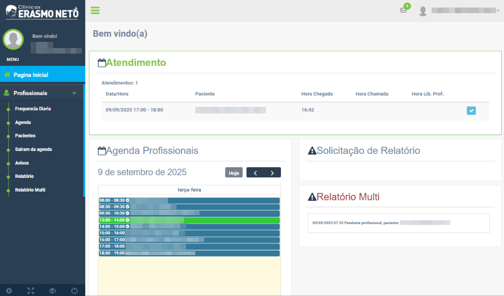
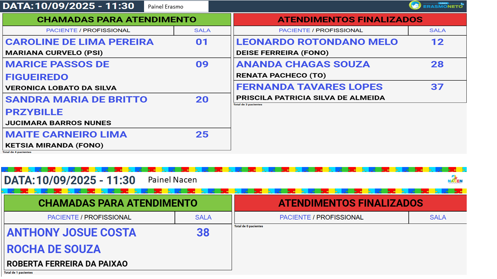
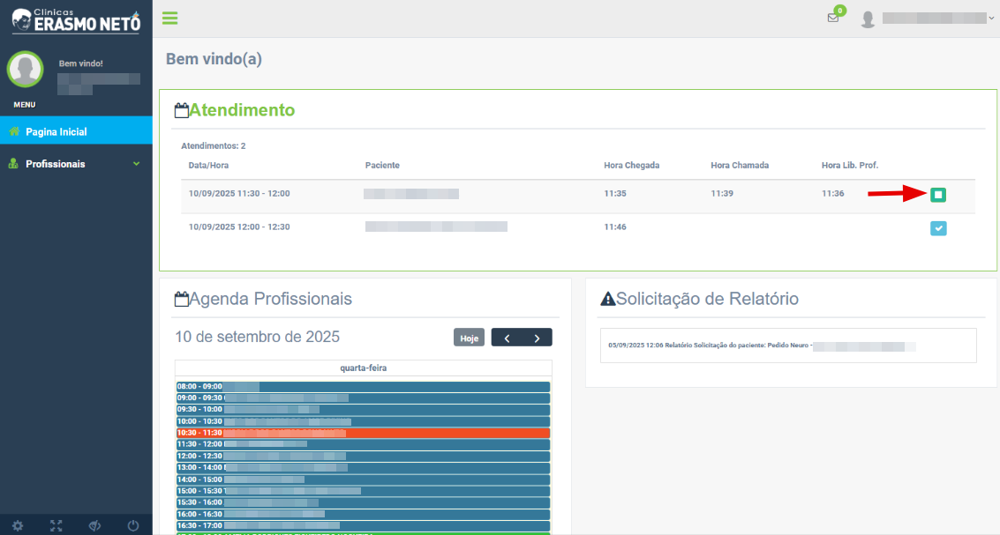

Guia Rápido: Painel de Chamadas
1. Na página inicial, você encontrará o painel “Atendimento”. Esse painel mostra a lista de pacientes que já confirmaram presença na recepção, junto com o horário
agendado. Assim, todos os profissionais conseguem visualizar, em tempo real, quem já chegou e está aguardando o atendimento.
2. Para chamar o paciente para a sala, clique no botão "" e autorize a chamada.
3. Após a autorização, a recepção enviará o nome do paciente para a tela de chamada, informando também a sala onde ele será atendido.
4. Ao iniciar o atendimento, clique novamente no botão "" para retirar o nome do paciente da tela
de chamada e confirmar à recepção que ele já se encontra na sala correta.
5. Quando finalizar o atendimento, clique no botão "" para encerrar o registro.
